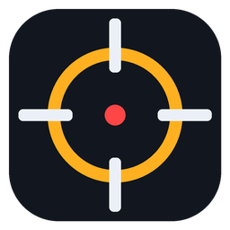

Devam etmek için tıkla.

Konsol komutlarını yapıştır (ör. sensitivity 1.2; cl_crosshairsize 2; cl_crosshairgap -2 ...). Nişangah değerleri yaklaşık çevrilir.
sensitivity 1.2; cl_crosshairsize 2; cl_crosshairgap -2 ...